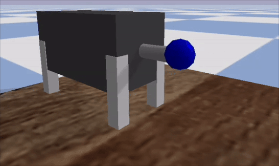

Lawrence, KS, USA
Control, Estimation, Machine Learning
About Me
I am a Ph.D. candidate in Mechanical Engineering at the University of Kansas. My academic journey began with a B.Sc. from Sharif University of Technology and includes an M.Sc. from KU. My graduate studies have been proudly supported by the Wyatt Memorial Scholarships and the National Science Foundation.
My research mission is to build safer, smarter, and faster control systems for complex, high-dimensional systems represented by machine learning models. I specialize in the intersection of three key fields: optimal control, estimation theory, and machine learning.
I focus on developing computationally efficient frameworks that merge the predictive power of Bayesian inference with the sheer speed of GPU-accelerated solvers, deployed using PyTorch CUDA and cuDNN libraries. This approach allows for robust, real-time decision-making in dynamic environments.
The applications of this work are exciting and diverse, ranging from motion planning for autonomous vehicles and the intricate control of soft robotics to optimizing large-scale thermo-fluid systems.
Recent Experience
- Research Intern — Mitsubishi Electric Research Laboratories (MERL)
Cambridge, MA | Summer 2024
Recent Publication
-
Ali Vaziri, et al. “Continuous-Time Optimal Control of Neural ODEs via Bayesian Inference”, Under review, Conference on Neural Information Processing Systems (NeurIPS), 2025.
Featured Project
Real-Time Motion Planning for Autonomous Vehicles
Developed a learning-based framework using GRU and ResNet models for AV trajectory planning, validated on real-world driving datasets and integrated with MPC benchmarks.
Contact
Feel free to reach out to me via email. I'm always open to discussing new projects, creative ideas, or opportunities.